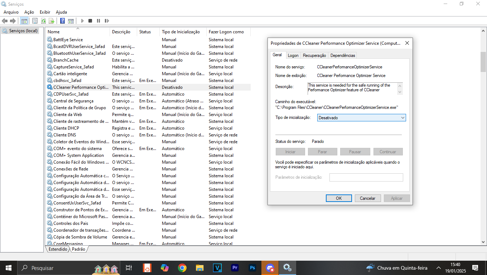
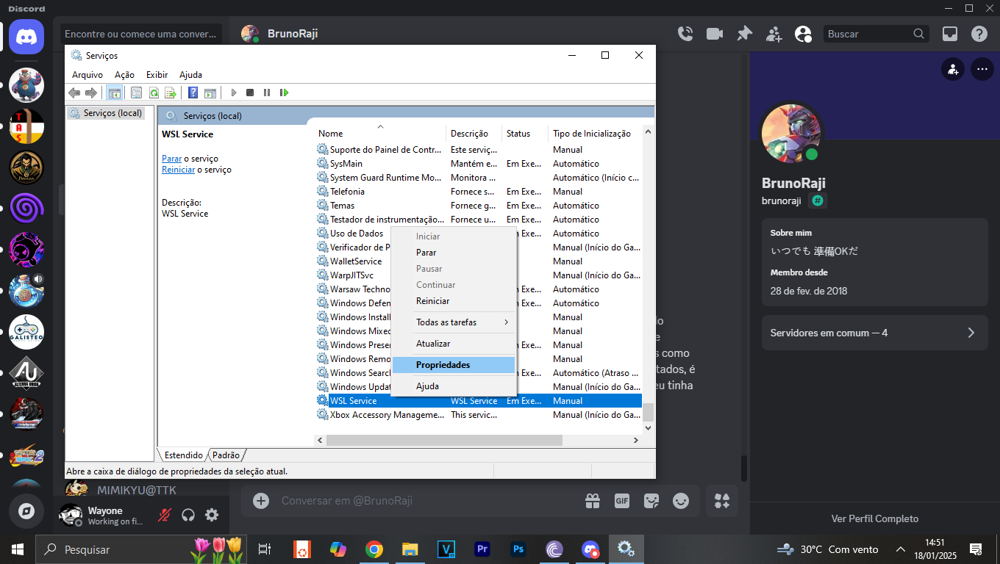
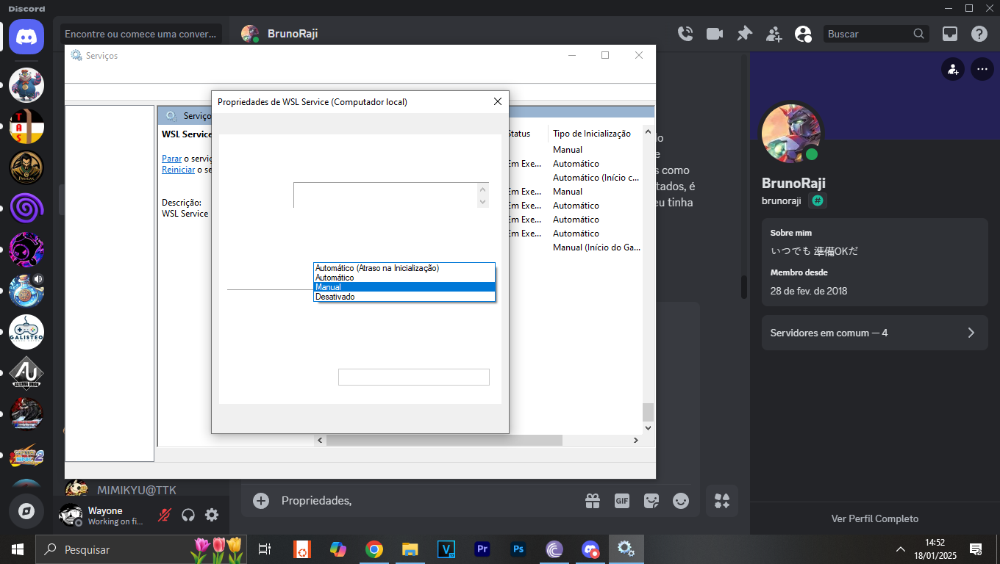
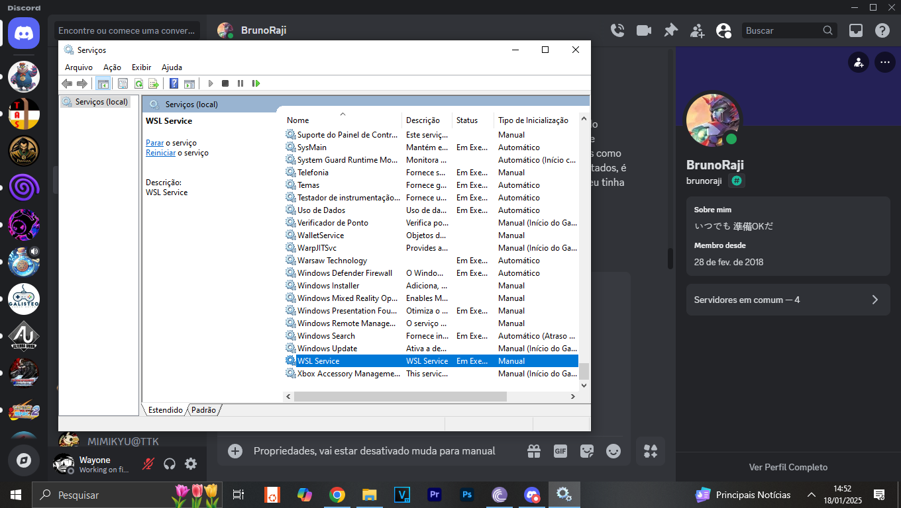
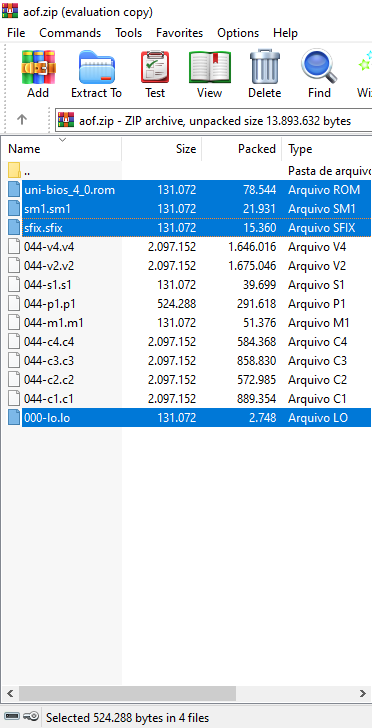
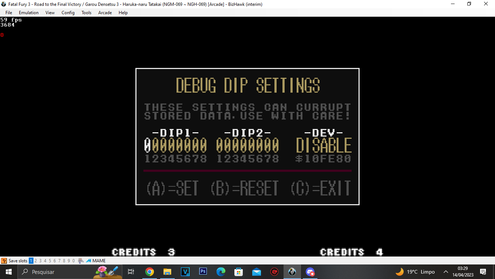
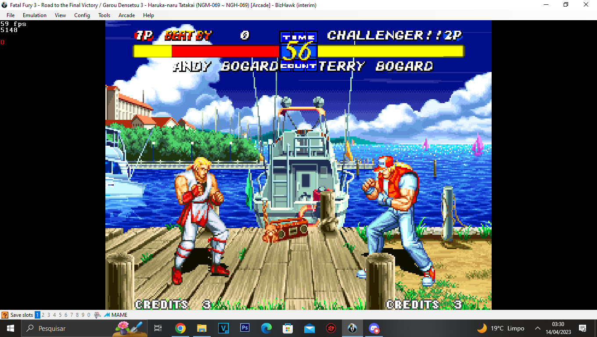

|
|
Artigos
/ discord_
(Discord - Mensagens Fixadas)
Last Update: 04/02/2025
(WIP...)
Killer Instinct Glitch Compilation
https://youtu.be/-cXnIqMZUfw
-----
-----
ok acabei de descobrir de vez o que aconteceu com o wsl 2
O maldito do ccleaner tem um serviço que para o wsl service
HUA
Tem uns 2 dias já que eu inicio o PC e o wsl começa desabilitado
Msm eu tendo deixado ele no automático para iniciar junto do PC
Consegui corrigir agora
Então não foi uma att do windows no fim
É um programa de terceiro mesmo que por conta dele botar processos em sleep
mode para manter o PC sem muitos processos
Ele acaba no processo fazendo a mesma coisa com o wsl
Se precisar para atualizar futuramente, é só pesquisar por serviços na barra
de pesquisar do windows e procurar por este serviço aqui em específico
Ai soma com o que fixei e ativa o WSL nesta mesma aba de serviços
Só ir lá pro fim e encontrar WSL service
propriedades e deixa em automático, reinicia o PC e pronto
Basicamente esse serviço do ccleaner não apenas bota para dormir os
processos e programas que você quer as vezes algum deles esta diretamente
ligado a outros processos
Ou seja algum dos processos aqui é garantido que é o WSL mas não sei qual
programa é
Então para previnir é só fazer isso ai
Vou deixar fixado
A solução
basta somar essa com a outra solução fixada anterior, mas ao invés de passar
o WSL service para manual passe para automático, reinicie o PC e ta feito:
https://github.com/microsoft/WSL/issues/11628

-----
Meu Deus HUA
Quase achei que tudo que tinha feito tinha ido de arrasta já
Eu acho que é bom você depois fazer um leve update no seu site lá
https://www.reddit.com/r/bashonubuntuonwindows/comments/1by8mb3/wslregisterdistribution_failed_with_error/?tl=pt-br
"Olá, se você ainda estiver com esse problema, sugiro que vá em Serviços e
configure o 'Serviço WSL' para 'Manual'. Funcionou para mim.
Atualização: Outra solução para isso é verificar se há um programa chamado "Subsistemas
do Windows para Linux Update" ou "Ferramentas de Saúde de Atualização do
Windows" em execução. Se você estiver usando ferramentas como CCleaner ou
algum programa que impeça esses programas de serem executados, é bom
verificar isso primeiro. Essa é a causa raiz de todos os problemas que eu
tinha há cerca de 5 meses. Espero que ajude!"
Não precisei da segunda solução, a primeira funcionou
Tipo é bem simples, na barra de pesquisa do windows escreve serviços
E procura por "WSL Service" vai estar la no fim
Propriedades, vai estar desativado muda para manual e ali nesse cantinho
esquerdo vai estar escrito "iniciar serviço" clica para iniciar e resolvido
seu problema



-----
Bom, o PCSX2 agora pede DLL ne para poder fazer o Dump, é bem simples, vem
aqui:
https://github.com/BtbN/FFmpeg-Builds/releases
E pega o "(...)win64-gpl-shared.zip"
Dentro da pasta "bin" joga todas as DLL na pasta raiz do PCSX2
-----
Melhor vídeo sobre todas técnicas de Garou, deixar fixado aqui para tu
baixar porque foi hard encontrar esse link no youtube, tentei de tudo para
baixar pela nicovideo mas ia não, depois tu baixa ai e se quiser registrar
no seu site um dia vale, Garou é um jogo cheio de truquezinho
Link caso queira baixar direto, é o mp4 que eu mesmo salvei aqui:
https://www.mediafire.com/file/6tebac082is63p9/Garou_Combo-Trick+Collection.mp4/file
-----
Tinha esquecido de falar isso
Eu testei isso aí no pcsx2 na época e testei tbm no duckstation mas não
resolve porque não é wayland o problema
O libtas já está launchando o emulador e os jogos com ele desabilitado
WAYLAND_DISPLAY="" libTAS
Caso queira tentar o comando
Só jogar isso no terminal direto que vai
-----
Acho que não ironicamente vou padronizar esse para os games de dreamcast msm
Porque não tem o que fazer, os de arcade não tem como padronizar
Cada jogo é um estilo de arte diferente inevitavelmente
Porque cada arcade é único vamos assim dizer
Todos tem um modelo, placa, controles e CPO diferente
Console já é sempre a mesma arte
No caso ai são dois bons exemplos
Não tem como fazer só para um
Mas para consoles dá
https://forums.libretro.com/t/4k-vertical-overlay-community-contributions/25247
Esse link é melhor de favoritar
-----
Deixar favoritado aqui o site que to usando
https://gamefaqs.gamespot.com/dreamcast/475155-capcom-vs-snk-2-millionaire-fighting-2001/faqs/14235
Quiser ai
Tem umas cor muito legais ai
-----
Carai tem coisa útil pra porra aqui
https://sega-naomi.eu/forum/viewtopic.php?t=1147
YAMAOOUT (unlock ratio and single mode)
MORIKAWA (unlock ratio and single mode and boss mode)
for boss mode press MP+MK then start at the title screen then START
-----
Deixar fixado para não se perder
No alpha 3 max tu tem 6 slots para cada conquista de novas funções para os
ISMs
Save completo versão USA ULUS10062 (ISMs, modos, personagens):
https://bucanero.github.io/apollo-saves/PSP/ULUS10062/
Melhores opções para uma ISM Plus: Air Chain Combo, SC Gauge recover (a
melhor barra de recovery para todos bonecos seja para custom seja para super
combos), Custom Combo (V-ISM fundido a sua barra A-ISM), Alpha Power,
Overall Power Up ou Super Alpha Counter e Supreme Alpha Power.
Não tenho certeza se a custom combo charger é a V-ISM msm porque tem um
custom combo no world tour, mas uma das duas deve ser o que eu to falando
Que é a que se funde a V-ISM com seu A-ISM
-----
Coleção de todo tipo de rom de todo sistema ou arcade que existe na
archive.org:
https://archive.org/details/softwarecapsules
-----
PS Vita roms:
https://archive.org/details/sony-playstation-vita-usa-full-set-nonpdrm-format
Updates (part 2):
https://archive.org/details/sony-playstation-vita-usa-full-set-nonpdrm-format-dlc-updates
-----
Ta é esse comando msm
Para iniciar o flycast dojo em Training mode este é o comando, depois disso
é só digitar o caminho da pasta do jogo que tu deseja abrir:
-config dojo:training=yes -config dojo:enableTrainingLua=yes -config
dojo:TestGame=yes
-----
https://bda.retroroms.info:82/downloads/hbmame/hbmame-0245_20-full/
brunoraji@ymail.com
USER: pr140n
PASS: 15gjnaAJBg8
-----
Libretro cores:
https://buildbot.libretro.com/nightly/windows/x86_64/latest/
-----
Agora se tu quer mesmo um tutorial full para cobrir o fundamental de como
funciona cada config, este vídeo é bom para isso, tem todo o processo de
criação e edição:
https://www.youtube.com/watch?v=itV_8Ib6IsU
Pode ser útil para quando você for criar seu próprio layout
O canal desse cara tem meio que várias coisas, tutoriais de várias coisas
cobrindo o que da para fazer no mame
-----
Esse vídeo ai tava marcado com like por mim
Eu lembro que eu já usei o canal desse cara para começar a manjar de KI
arcade
https://youtu.be/_dLKdpFalB8?si=6yw2FoNvcrbc41MY&t=13
É esse o setup para deixar os projétil correr lento
É basicamente o reflect do fulgore
-----
https://www.youtube.com/@pek3to
Mais content de KI, com input display para os combos ^
-----
Para os da SNK é só você jogar esses 4 arquivos específicos que se encontram
no neogeo.zip em todo jogo da SNK, só extrair eles do neogeo.zip e ir
jogando dentro de cada rom.
Mesma coisa pode ser feita para outros jogos, basta você abrir o rom sem ser
pelo .xml e ele vai mostrar os arquivos que estão faltando que no caso são
os que o multi bunder une, só puxar esses arquivos de bios que estão
faltando e jogar eles no zip daquele jogo e sistema que esta feito, 0 delay.

-----
https://www.youtube.com/@GlaciusXL
Deixar salvo esse cara ai
Se tu quiser qualquer coisa de KI e KI2 de arcade
É com ele
Glitching, combos, ele faz até tutorial de como fazer certos combos super
complicados
Gravando tanto num arcade da arcade1up e em fight sticks, é bem preciso os
vídeos dele
Do SNES a melhor source é o starsex
Já os KI de arcade, é esse cara
-----
Ohhhh testei algo aqui e deu certo
Lembra dos loadings e dos saves grande dos games da cps3?
Eu peguei uma dica que só vi depois que fechei aquele run com o Ryu
Indo na pasta arcade>saveram e excluindo os arquivos de .saveram do game que
tu quer gravar acaba com os loadings
Acabou mesmo hua
Agora flui como qualquer game normal
Acabei de testar no que mais da loadings agora o new generation
Ta normalzão
Então basicamente qualquer problema de loadings longos se resolve só
excluindo os arquivos de do game na pasta saveram
Gravar os cps3 agora vai ser tranquilo para nós sabendo disso
-----
Porque os criadores desse bug colocaram o título original em coreano
https://www.youtube.com/watch?v=O77iv_1JPgo
https://www.youtube.com/watch?v=meO1BJMRDD0
Originalmente é power stock 255
Esse segundo vídeo tem 9 meses, o primeiro 11 anos
Por incrível que pareça, é extremamente fácil fazer isso mesmo contra o cpu
O segredo do bug é um boneco defender seja o segundo jogador seja o cpu e
dai no meio da animação de bloqueio apertar C+D acho
-----
Agora posso gravar a série do fatal fury por aqui
E os finais vão aparecer
Porque pelo que me disseram os finais não bugam no console mode
Isso foi de muita ajuda
Pelo que vi tem todos cheats comuns em todos jogos
todos que facilitam a vida claro
poder, tempo, vida, desbloquear bonecos
E o bom que quando troca de rom ou abre ele dnv o emulador já deixa no
console mode msm
Não precisa ficar configurando nada ou coisa do tipo
HO isso é legal tbm

é mais uma maneira de cheatar algumas coisas
ae é isso que queremos hua

Não vou precisar ficar ativando isso todo round
-----
https://obsproject.com/forum/resources/display-fightstick-motions.344/
-----
Ele é o boneco que tem aqueles multiple shoryuken cancels
Eu acho que o shenkof ainda tem o tutorial upado da trick pro combo dele
Lembro que era hard para um caralho
Mas eu consegui fazer
Só pegar o input dnv
https://youtu.be/EHxwuoLAo4o
Essa desgraça aqui msm
Engraçado é que tem cara que faz isso no arcade msm
O mano no fim do vídeo mostrando como fazer
Eu achava os rekka cancel do iori absurdo
Mas isso ai é mais rápido que aquilo, acredite
Ele cancela mais rápido
Demitri é ridículo nesse jogo
Sabe o mais engraçado desse combo? É que ele precisa que a barra fique cheia
Mas ele não perde barra cancelando os shoryukens
Na real acho que só cancela depois do terceiro
Mas a cada shoryuken é um cancel a menos
Dai vira infinito
-----
Deixa eu ver
Tem um site que eu uso
Que ele mostra toda mecânica de qualquer jogo
https://wiki.supercombo.gg/
Esse site é bom, além das mecânicas e estratégias ele da todos special,
normal e super de todo jogo
Achei
https://wiki.supercombo.gg/w/Fatal_Fury_3
Fatal Fury 3
Fatal Fury 3 is a 2D fighting game released by SNK in 1995.
"Hidden Moves are first activated by pressing ABCD + Start and your name
will be a green color. When your health is dangerously low, execute certain
actions to ready each character's hidden move. Most of them are done via
combo"
-----
https://www.youtube.com/watch?v=JzHToxhCl-M
Deixar isso fixado porque é algo interessante
Para fazer isso é só fazer a mesma coisa que este vídeo (charge throw down
AB OR CD↓ (charge):
https://www.youtube.com/watch?v=0NeJthHnko4
Baixei o pcsx 1.5 da versão dev, agora tem hotkeys HUA
Muito bom
-----
|
|